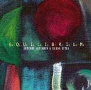

| Artist: | A. Artemiev and Karda Estra |
| Title: | Equilibrium |
| Label: | Electro Shock ELCD 031 |
| Length(s): | 73 minutes |
| Year(s) of release: | 2002 |
| Month of review: | [10/2002] |
| 1) | Preliminary Steps | 11.03 |
| 2) | Last Scene On Earth | 8.15 |
| 3) | Open Window | 6.16 |
| 4) | The Teller Of The Tale | 18.56 |
| 5) | Equilibrium | 8.40 |
| 6) | The Curtain Falls | 19.57 |
The title Last Scene On Earth is probably a play on words (try it). It is even scarier, then the previous track. Dark somberings, gothic maybe, with sparse hollow percussive sounds and the like remind very much of the soundscapes albums by Robert Fripp, the dark The Gaqtes Of Paradise. Again, nothing a lot in the way of melody, although you might find one lurking around some murky corner once in a while. The music is also quite repetitive and the piano really pervays a sense of foreboding But maybe pictures are not needed here.
Open Window has a percussive opening, something like a gamelan orchestra, but less nervous. The guitarwork is more fluent here and there is more melody involved. In my other earphone, another melody, a sad one, sets in. The loneliness of the desert is evoked here, with a very open sound. For them a rather concise piece of work, but with plenty of tension in there and I like it a lot. I was also thinking during this piece of Hackett's Shadow Of The Hierophant.
We are now moving into own of the major tracks, length wise: The Teller Of The Tale. Dreamy, burbling electronic and a piano run full of foreboding open it broodingly. The orchestration has similarities with Karda Estra's work, but for the moment it stays rather vague. The music does get louder and more involved later on, a bit like a huge body of insects going about making all kinds of sounds and dark mysterious ahhhs are being injected into the music along way reverberating synth sounds. The final melodic choirs are typically Karda Estra.
Equilibrium has fluting sounds and dark percussive piano. This is music that speaks well to my mind. The feeling and attention to detail is great here. The notes occur exactly where they should, but not because they are so obvious. There is a stillness to it, until at least, Caron Hansford sets in. The music is then more pronounced. The guitar line is quite melodic, stately and orchestral, but continually subdued and well grieving.
The Curtain Falls is almost twenty minutes in length. In the beginning at least, the sound is hollow and open. Weird effects, percussive piano, a lone guitar, again slow and ponderous the music develops with some dark phrasings on oboe and also the sharp sound of the cor anglais (if I am not mixing these up right here). That instruments gives the music its classical flavour.